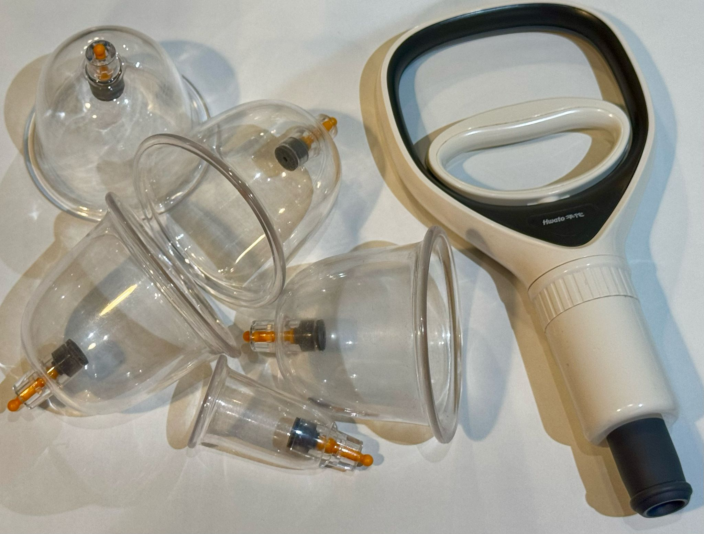
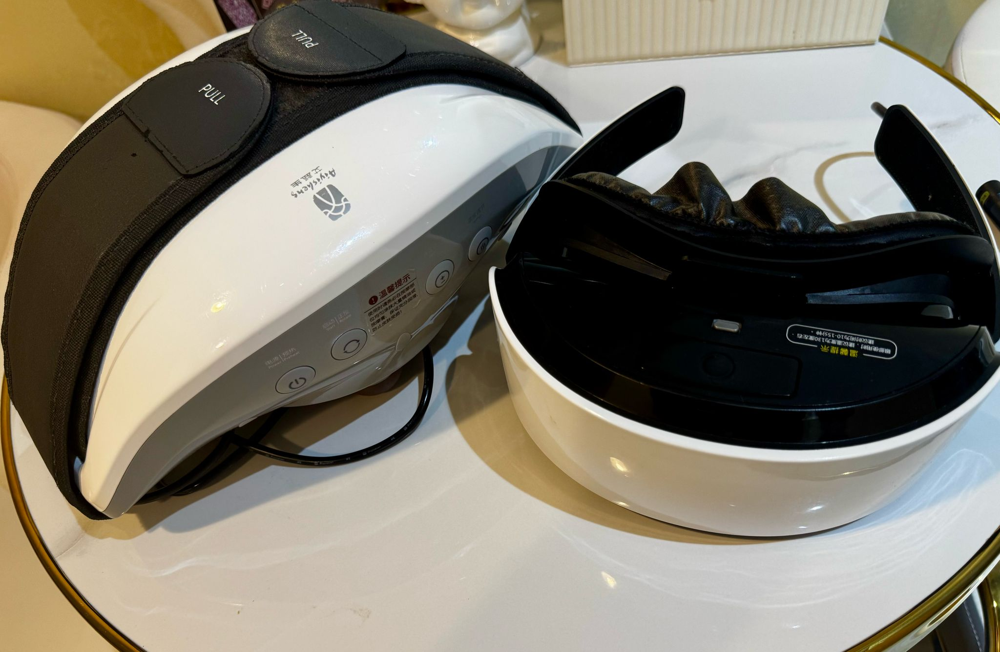
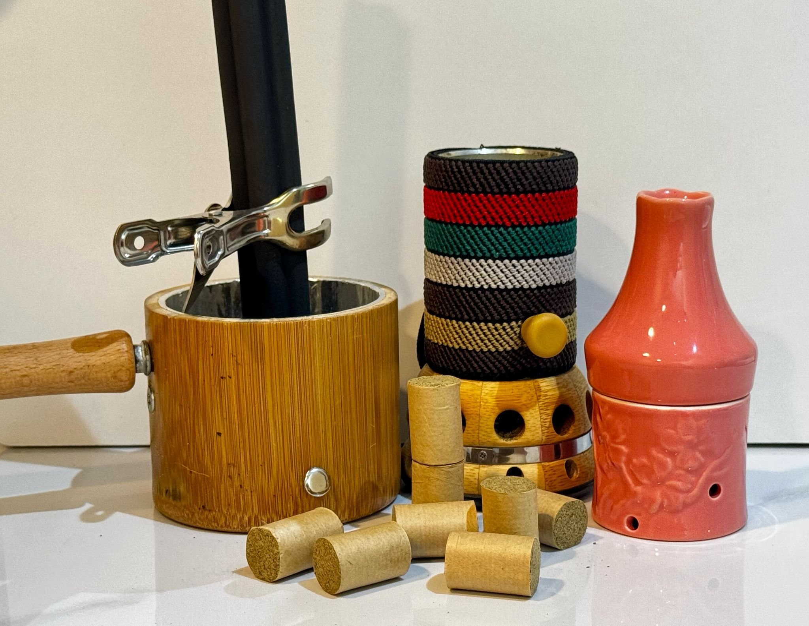
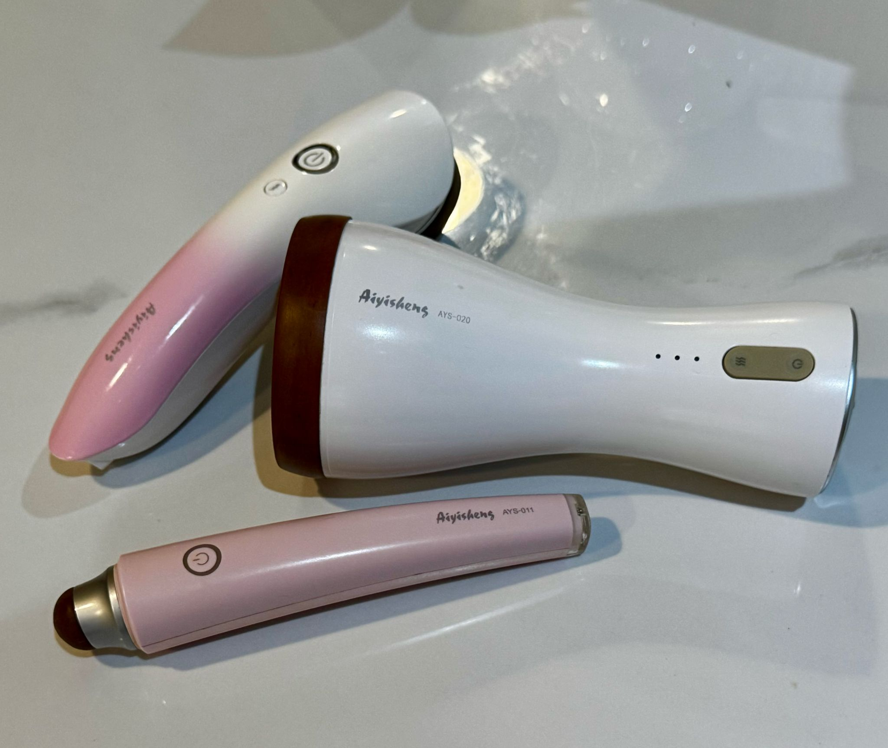

Health Maintenance
Cupping Therapy 拔罐

Using glass and plastic suction cups to place on the skin to create a vacuum, pulling the skin upward. This stimulates blood flow, releases muscle tension, and draws out toxins. Good for pain relief, relaxation, and improving circulation.
Moxibuskon Therapy 艾灸
Aijiu, burning dried mugwort (moxa) near or on the skin at acupressure points. The heat warms the body, boosts Qi (energy) flow, and promotes healing. It’s known for relieving pain, enhancing immunity, and supporting digestion.


GuaSha Therapy 刮痧
Gua Sha uses a jade or horn to scrape the skin in long strokes, stimulating circulation and releasing tension. It’s effective for pain, stiffness, and boosting skin health, especially on the face or body.
